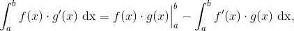
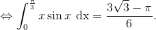

Metoda integrării prin părți
O metodă de a calcula integralele definite este metoda integrării prin părți.
Teorema CI37: Integrarea prin părți
Fie funcțiile ![f,g:\left [ a,b \right ]\rightarrow \mathbb{R}](../../media/webbooks/404/2697/images/equations/phflslg1myqwmuitf4ukiq==.gif) două funcții derivabile, având derivatele
două funcții derivabile, având derivatele  și continue.
și continue.
Atunci avem următoarea relație:  care se numește formula de integrare prin părți.
Exerciții rezolvate:
- Să se calculeze, folosind integrarea prin părți, următoarele integrale definite:

Rezolvare:
- Calculăm
Alegând  și
și  , se obține, prin derivare, respectiv prin integrare că , respectiv .
, se obține, prin derivare, respectiv prin integrare că , respectiv .
Aplicând metoda integrării prin părți se obține:
![\begin{align*} \int_{1}^{e}x\ln x\ \mathrm{dx}&=\frac{x^2}{2}\cdot \ln x\Big|_1^e-\int_{1}^{e}\frac{1}{x}\cdot \frac{x^2}{2}\ \mathrm{dx}\\\\&=\left (\frac{e^2}{2}\cdot \ln e-\frac{1^2}{2}\cdot \ln 1 \right ) -\int_{1}^{e} \frac{x}{2}\ \mathrm{dx}\\\\&=\left (\frac{e^2}{2}\cdot 1-\frac{1^2}{2}\cdot 0 \right )-\frac{1}{2}\cdot \frac{x^2}{2}\Big|_1^e\\\\ &=\frac{e^2}{2}-\frac{1}{2}\left ( \frac{e^2}{2}-\frac{1^2}{2} \right )\\\\ &=\frac{e^2}{2}-\frac{e^2}{4}+\frac{1}{4}\\\\&=\frac{2e^2-e^2+1}{4}\\\\&=\frac{e^2+1}{4} \end{align*}](../../media/webbooks/404/2697/images/equations/uensog-xr8_unc4w9ww99g==.gif)
- Calculăm

Alegem și . Prin derivare, respectiv prin integrare, obținem că , respectiv .
Atunci, folosind metoda integrării prin părți, obținem că:

- Calculăm
Avem:
Calculăm separat cele două integrale:
Alegem și Derivând și integrând, obținem: și .
Atunci avem:
Atunci, revenind la calcularea integralei inițiale, se obține:
- Să se determine
 , astfel încât să aibe loc relația
, astfel încât să aibe loc relația
Rezolvare:
Alegem ”părțile”:
Atunci, integrala devine:
![\begin{align*} &\int_{a}^{a+1}(3x-2)\cdot e^{x-a}\ \mathrm{dx}=3\\\\ &\Leftrightarrow (3x-2)\cdot e^{x-a}\Big|_a^{a+1}-\int_{a}^{a+1}3e^{x-a}\ \mathrm{dx}=3\\\\ &\Leftrightarrow \left [ 3(a+1) -2\right ]\cdot e^{a+1-a}- \left (3a -2\right)\cdot e^{a-a}-3\int_{a}^{a+1}e^{x-a}\ \mathrm{dx}=3\\\\ &\Leftrightarrow (3a+3-2)\cdot e-(3a-2)\cdot e^0-3e^{x-a}\Big|_a^{a+1}=3\\\\ &\Leftrightarrow (3a+1)\cdot e-(3a-2)\cdot 1-3\left ( e^{a+1-a}-e^{a-a} \right )=3\\\\ &\Leftrightarrow 3ae+e-3a+2-3(e^1-e^0)=3\\\\ &\Leftrightarrow 3ae+e-3a+2-3e+3=3\\\\ &\Leftrightarrow 3ae-3a-2e+5=3\\\\&\Leftrightarrow e(3a-2)-3a+5=3 \end{align*}](../../media/webbooks/404/2697/images/equations/7fs0i7wmktjf6pkkpplqug==.gif)
Am găsit că relația are loc pentru